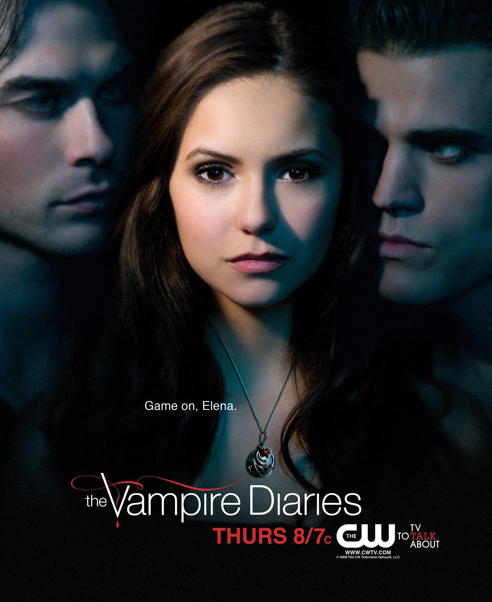

1ª temporada
22 episódios
Elena tenta recomeçar após uma perda familiar quando Stefan Salvatore chega a Mystic Falls. A aproximação dos dois traz Damon de volta à cidade e abre caminho para segredos sobre os irmãos, as famílias fundadoras e o passado da própria Elena.